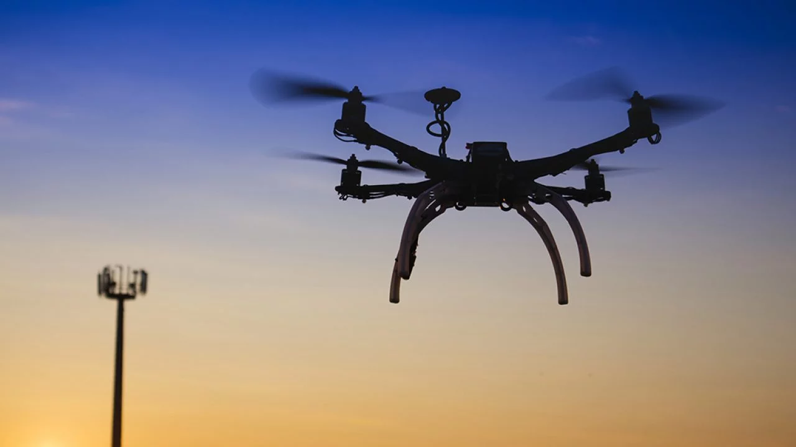
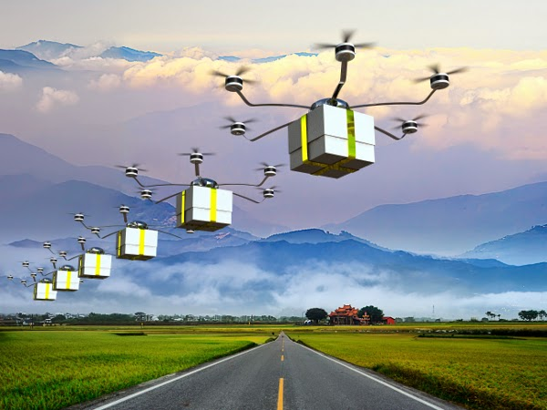

Drones autónomos

¿Qué son los drones autónomos y cuál es su clasificación?
Podemos definir drones autónomos como aeronaves que son capaces de operar sin la intervención del piloto. La mayoría de los drones que conocemos están tripulados, aunque de forma remota, mientras que un avión autónomo es capaz de tomar decisiones de vuelo por sí mismo.
En los drones autónomos, existe un sistema de gestión de vuelo (FMS, Flight Management System), que puede decidir por sí mismo cómo debe volar la aeronave para evitar colisiones, manteniendo la trayectoria de vuelo en presencia de ráfagas de viento.
Esto no debe confundirse con el alcance, el tiempo que una aeronave puede permanecer en el aire sin repostar.
Clasificación de drones autónomos
La industria automotriz ha clasificado diferentes niveles de autos sin conductor durante años. En ausencia de una autoridad oficial u organismo de clasificación, podemos aplicar dicha clasificación a un UAV o vehículo aéreo no tripulado. De esta forma, se pueden identificar seis niveles de autonomía. Los niveles van desde el 0, ninguna autonomía a 5, un vehículo completamente autónomo.
• Nivel 0: Sin automatización de vuelo. El piloto tiene el control total de la aeronave.
• Nivel 1: Soporte experimental. Aunque la aeronave dispone de sistemas de automatización, como el control de altitud, es el piloto quien controla la RPA.

• Nivel 2: Hay una sección de automatización experimental. Hay varios sistemas autónomos operando al mismo tiempo, pero el piloto tiene el control.
• Nivel 3: El plano funciona de forma independiente en ciertas circunstancias, pero el piloto de viaje debe estar preparado y debe prepararse si se produce un sistema, falla o pérdida de actividad, vaya en el momento de controlar a Dran. En este nivel, el plano funciona de forma independiente por un tiempo.
• Nivel 4: Automatización de vuelo superior. El plano es independiente en la mayoría de los casos; El piloto puede ser responsable, pero en general, no. Los usuarios se han multiplicado sin ingresar si se produce el sistema o se produce un error.
El propio sistema de automatización de vuelo tiene un sistema de respaldo para intervenir en caso de falla del sistema principal y aterrizar con seguridad. Sin embargo, el rendimiento del sistema sigue siendo limitado bajo ciertas condiciones, por lo que el dron puede encontrarse en situaciones en las que no es posible seguir volando. La imagen del piloto desapareció en la distancia.
• Nivel 5: El dron es completamente autónomo. La aeronave está equipada con un sistema de gestión de vuelo capaz de tomar decisiones ante imprevistos y cuenta con un sistema de respaldo para intervenir en caso de falla del
sistema principal y posiblemente poner a la aeronave en un estado de mínimo riesgo.